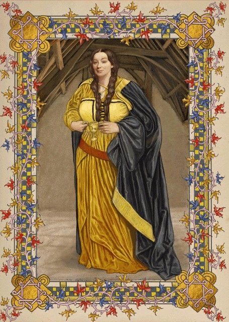
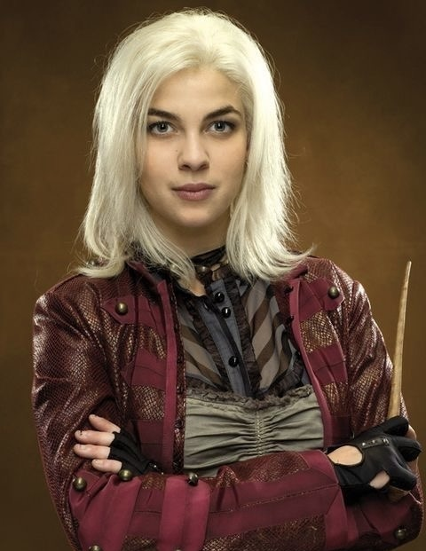
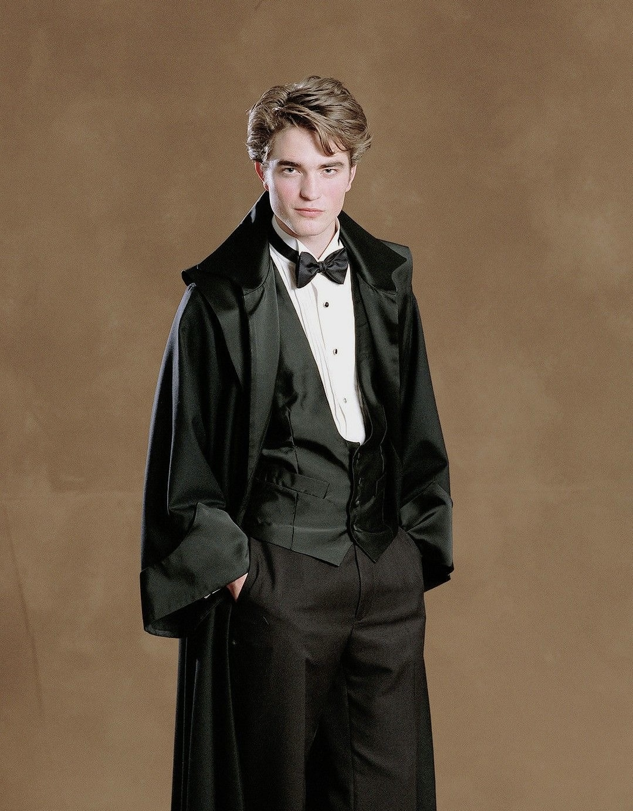
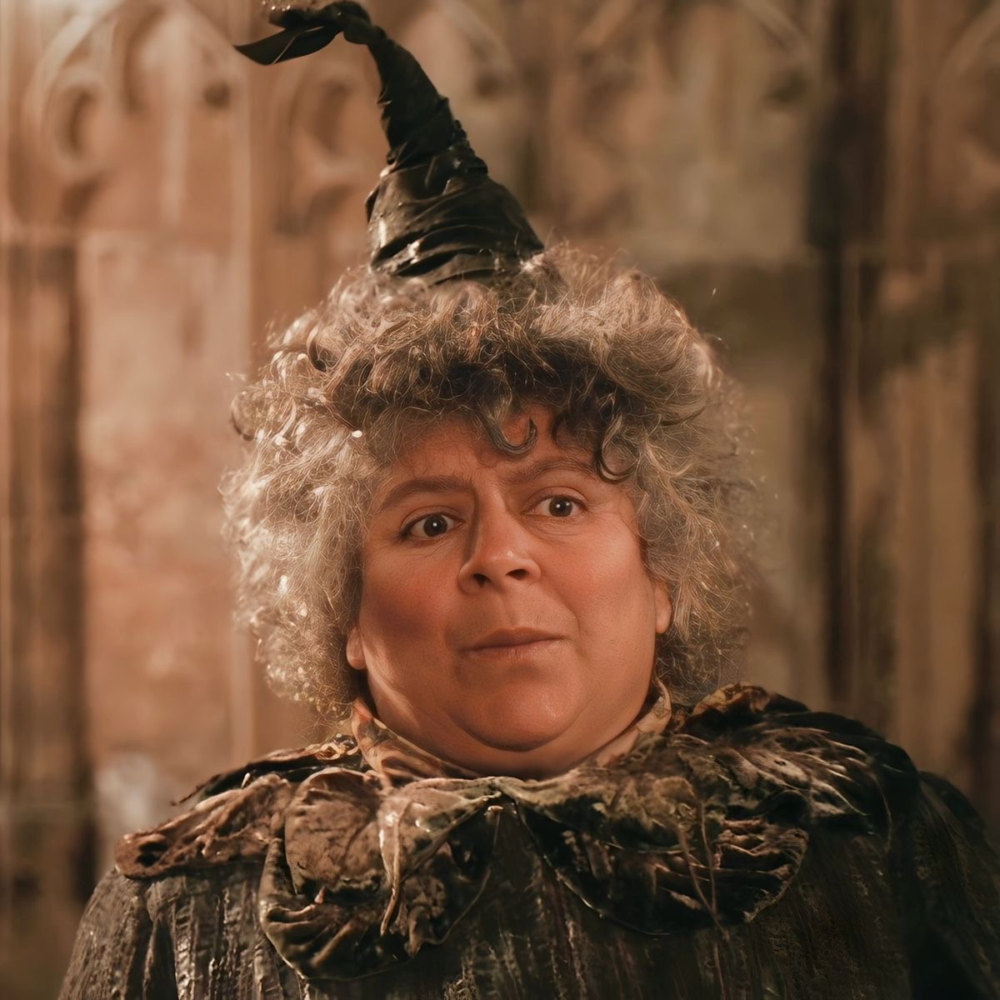

Bem vindos a lufa-lufa

Fundador da casa LUFA-LUFA
Helga era bondosa, justa e acolhedora. Aceitava alunos de todas as origens e acreditava no trabalho árduo e na lealdade acima de tudo. Foi especialista em feitiços de comida e contribuiu enormemente para as receitas da cozinha de Hogwarts.
Personagens mais famosos

Ninfadora Tonks é destemida e divertida, enfrentando perigos com coragem e um senso de humor inabalável.

Cedrico Diggory representa o melhor de Hogwarts: justo, leal e corajoso até o fim.

Pomona Sprout cuida de suas plantas e alunos com o mesmo carinho, sempre pronta a nutrir e ensinar.
Diretor da casa
Pomona Sprout